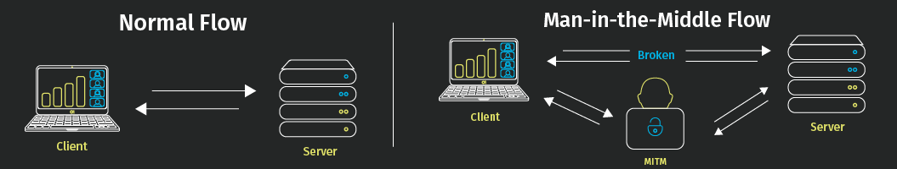

MITM :
man in the middle attack
A man in the middle (MITM) attack is a general term for when a perpetrator positions himself in a conversation between a user and an application—either to eavesdrop or to impersonate one of the parties.

A man-in-the-middle attack is a type of eavesdropping attack, where attackers interrupt an existing conversation or data transfer. After inserting themselves in the "middle" of the transfer, the attackers pretend to be both legitimate participants. This enables an attacker to intercept information and data from either party while also sending malicious links or other information to both legitimate participants in a way that might not be detected until it is too late. You can think of this type of attack as similar to the game of telephone where one person's words are carried along from participant to participant until it has changed by the time it reaches the final person. In a man-in-the-middle attack, the middle participant manipulates the conversation unknown to either of the two legitimate participants, acting to retrieve confidential information and otherwise cause damage.
Key Concepts of a Man-in-the-Middle Attack:
- Are a type of session hijacking
- Involve attackers inserting themselves as relays or proxies in an ongoing, legitimate conversation or data transfer
- Exploit the real-time nature of conversations and data transfers to go undetected
- Allow attackers to intercept confidential data
- Allow attackers to insert malicious data and links in a way indistinguishable from legitimate data
MITM Workflow structure
Scenario 1: Intercepting Data
The attacker installs a packet sniffer to analyze network traffic for insecure communications.
When a user logs in to a site, the attacker retrieves their user information and redirects them to a fake site that mimics the real one.
The attacker's fake site gathers data from the user, which the attacker can then use on the real site to access the target's information.
In this scenario, an attacker intercepts a data transfer between a client and server. By tricking the client into believing it is still communicating with the server and the server into believing it is still receiving information from the client, the attacker is able to intercept data from both as well as inject their own false information into any future transfers.

Scenario 2: Gaining Access to Funds
The attacker sets up a fake chat service that mimics that of a well-known bank.
Using knowledge gained from the data intercepted in the first scenario, the attacker pretends to be the bank and starts a chat with the target.
The attacker then starts a chat on the real bank site, pretending to be the target and passing along the needed information to gain access to the target's account.
In this scenario, the attacker intercepts a conversation, passing along parts of the discussion to both legitimate participants.
Real-World MITM Attacks
In 2011, Dutch registrar site DigiNotar was breached, which enabled a threat actor to gain access to 500 certificates for websites like Google, Skype, and others. Access to these certificates allowed the attacker to pose as legitimate websites in a MITM attack, stealing users' data after tricking them into entering passwords on malicious mirror sites. DigiNotar ultimately filed for bankruptcy as a result of the breach. In 2017, credit score company Equifax removed its apps from Google and Apple after a breach resulted in the leak of personal data. A researcher found that the app did not consistently use HTTPS, allowing attackers to intercept data as users accessed their accounts.
Here is the docker container (dockerfile) for practice
FROM ubuntu:20.04 as builder
# Install openssh-client so we get ssh-keygen.
RUN apt update -qq && apt install -y -q openssh-client
# Copy ssh-keygen (and library dependency) to our final image.
FROM ubuntu:20.04
COPY --from=builder /lib/x86_64-linux-gnu/libcrypto.so.1.1 /lib/x86_64-linux-gnu/libcrypto.so.1.1
COPY --from=builder /usr/bin/ssh-keygen /usr/bin/ssh-keygen
RUN useradd -m -s /bin/bash ssh-mitm
COPY openssh-7.5p1-mitm/sshd /home/ssh-mitm/bin/sshd_mitm
COPY openssh-7.5p1-mitm/ssh /home/ssh-mitm/bin/ssh
COPY openssh-7.5p1-mitm/ssh_config.mitm /home/ssh-mitm/etc/ssh_config
COPY openssh-7.5p1-mitm/sshd_config /home/ssh-mitm/etc/sshd_config
RUN chown ssh-mitm:ssh-mitm /home/ssh-mitm/etc/
USER ssh-mitm
WORKDIR /home/ssh-mitm
RUN mkdir -m 0700 /home/ssh-mitm/empty /home/ssh-mitm/.ssh /home/ssh-mitm/tmp /home/ssh-mitm/log
COPY docker/docker-entrypoint.sh /usr/local/bin/docker-entrypoint.sh
EXPOSE 2222/tcp
ENTRYPOINT ["/usr/local/bin/docker-entrypoint.sh"]
CMD /home/ssh-mitm/bin/sshd_mitm -D -f /home/ssh-mitm/etc/sshd_config